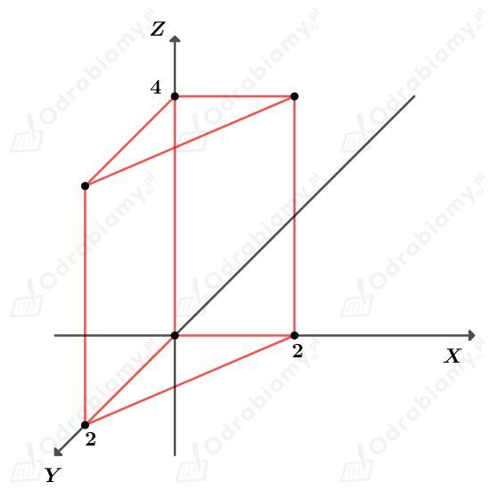

a)
Dany jest graniastosłup o krawędziach długości a, b i c.
Do tego graniastosłupa należą punkty o współrzędnych spełniających podany układ równań:
Wyznaczmy długości boków tego graniastosłupa. Mamy:
Wyznaczmy objętość tego graniastosłupa. Mamy:
b)
Dany jest graniastosłup o krawędziach długości a, b i c.
Do tego graniastosłupa należą punkty o współrzędnych spełniających podany układ równań:
Wyznaczmy długości boków tego graniastosłupa. Mamy:
Wyznaczmy objętość tego graniastosłupa. Mamy:
c)
Dany jest graniastosłup do którego należą punkty o współrzędnych spełniających podany układ równań:
Rysunek:

Podstawą tego graniastosłupa jest równoramienny trójkąt prostokątny o przyprostokątnej długości 2. Wysokość tego graniastosłupa ma długość 4.
Wyznaczmy objętość tego graniastosłupa. Mamy:
Dany jest walec o promieniu podstawy długości r i wysokości długości h.
a)
Podany walec opisany jest układem nierówności:
Pierwsze równanie układu opisuje koło o środku w punkcie (0, 0) i promieniu długości 3. Zatem
Z drugiego równania układu odczytujemy długość wysokości h walca. Mamy:
Wyznaczmy objętość tego walca. Mamy:
Wyznaczmy pole powierzchni bocznej tego walca. Mamy:
b)
Podany walec opisany jest układem nierówności:
Pierwsze równanie układu opisuje koło o środku w punkcie (0, 0) i promieniu długości √10. Zatem
Z drugiego równania układu odczytujemy długość wysokości h walca. Mamy:
Wyznaczmy objętość tego walca. Mamy:
Wyznaczmy pole powierzchni bocznej tego walca. Mamy:
c)
Podany walec opisany jest układem nierówności:
Pierwsze równanie układu opisuje koło. Zapiszmy to równanie w postaci kanonicznej. Mamy:
Zatem jest to koło o środku (-1, 0) i promieniu długości 4.
Zatem
Z drugiego równania układu odczytujemy długość wysokości h walca. Mamy:
Wyznaczmy objętość tego walca. Mamy:
Wyznaczmy pole powierzchni bocznej tego walca. Mamy: